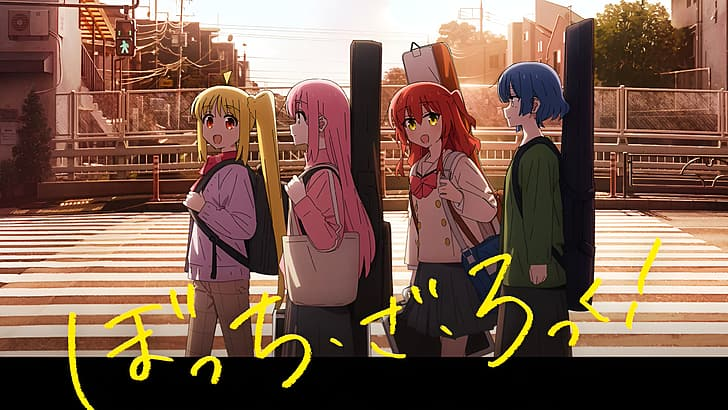
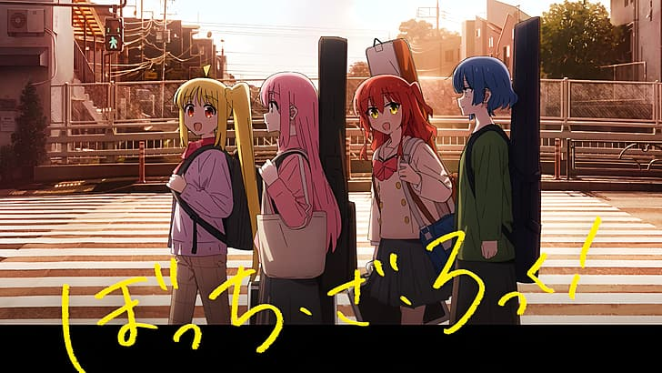

A história nos apresenta Gotoh Hitori, uma guitarrista talentosa que upa vídeos no YouTube e sonha em alcançar o estrelato. Apesar de ser ambiciosa, a jovem apelidada de Bocchi tem capacidades sociais praticamente nulas, o que faz com que a vida de rockeira dela fora da internet não engate.